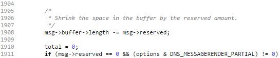

En el diff del fix para CVE-2016-2776, el cambio mas interesante es en dns_message_renderbegin()
Comparando a simple vista podemos intuir que existia comportamiento indefinido cuando r.length < msg->reserved daba FALSE (osea, todo estaba joya) pero r.length - DNS_MESSAGE_HEADERLEN < msg->reserved es TRUE (no, para, ESTO es lo que tenemos que chequear). Por lo tanto, el bug potencialmente ocurre cuando se daba la siguiente condicion:
not (r.length < msg->reserved) and (r.length - DNS_MESSAGE_HEADERLEN < msg->reserved)
(r.length >= msg->reserved) and (r.length - DNS_MESSAGE_HEADERLEN < msg->reserved)
r.length - DNS_MESSAGE_HEADERLEN < msg->reserved <= r.length
Mirando dns_message_renderbegin() notamos que r.length describe el espacio disponible en isc_buffer_t buffer, que es donde la respuesta del server sera escrita. Esta se calcula como buffer->length - buffer->used (no seas vago y fijate en el codigo si no me crees). De acuerdo a como construyamos la query, podemos asegurar que r.length sea igual a un valor conocido dado que representa el tamanio maximo que la respuesta puede tener al empezar a construirse (despues de todo estamos en dns_message_render***BEGIN***()). En nuestro caso, podemos asegurar que sea 512. Ademas, DNS_MESSAGE_HEADERLEN es simplemente una constante de valor 12. En definitiva, si logramos que 500 < msg->reserved <= 512, podemos triggerear la condicion fixeada.
Pero que es msg->reserved? En lib/dns/message.c, podemos ver que es una variable que indica cuantos bytes se desean reservar en msg->buffer para posterior uso. Solo se manipula con las funciones dns_message_renderreserve() y dns_message_renderrelease(). La parte que da miedo es lo que hace usa para lograr su cometido. En dns_message_rendersection() se puede ver que modifica el estado interno de msg->buffer, precisamente msg->buffer->length, con el motivo de que posteriores manipulaciones sobre ese buffer crean que su tamanio real es mas chico.
Pero aguanta, vieron la implementacion de la lib que manipula isc_buffer_t? (sip, el famoso buffer.c) Cada funcion hace bocha de aserciones sobre isc_buffer_t para asegurarse de que no esta haciendo cagadas y termine potencialmente corrompiendo memoria. Hay que tener en cuenta cuidadosamente el resto del estado de isc_buffer_t para recien despues cambiarlo. Como el CVE describe que una asercion se dispara desde buffer.c, claramente existe un contexto en donde msg->reserved termina dejando el buffer en un estado indefinido y que el proceso aborta en el siguiente uso de alguna funcion de buffer.c.
Convencidos de que msg->reserved es malo malo y que es especialmente malo malo cuando 500 < msg->reserved <= 512, queda ver como podemos manipular esta variable a gusto del comensal. Trackeando el uso de dns_message_renderreserve() en lib/dns/message.c encontramos que msg->reserved es utilizada para trackear cuantos bytes seran necesarios para escribir los Additional RR (OPT, TSIG y SIG(0)) una vez que se termine de renderear la respuesta en dns_message_renderend().
La forma mas directa que encontre de manipular un Additional RR incluido en la respuesta es enviar una query con un TSIG RR conteniendo una firma invalida. En este caso, el server hace echo de practicamente todo el record al responder.
El siguiente script envia una query A al server con un TSIG lo suficientemente grande para que named, al escribir la respuesta, necesite reservar 501 bytes en msg->reserved
aca pone el script rata
Soooo eaaasy! Pero que fue lo que termino pasando? Para empezar, en la captura de Wireshark se puede ver que el TSIG RR de la query es de 517 bytes. Esto es porque la representacion en memoria de la firma que mantiene named luego de parsear el mensaje ocupa menos espacio que el record original. En mi caso, realizando las pruebas en bind9 version 9.10.3.dfsg.P4-10.1 para Debian stretch/sid, necesito agregar 16 bytes adicionales para compensar la reduccion en memoria. Ahora veamos que pasa dentro del proceso.
Luego de parsear el request y fallar al validar la firma que trae, el proceso empieza a renderear la respuesta de error. Para ello, antes incluso de llamar a dns_message_renderbegin() (fundamental por cosas que no valen la pena detallar... mejor dicho: "ejercicio para el lector") ya reserva msg->sig_reserved bytes (calculados desde la firma devuelta por spacefortsig()) con la funcion dns_message_renderreserve(). En nuestro caso, como nosotros queriamos, reserva 501 bytes.
Para cuando termina llegando a dns_message_renderbegin() tenemos el escenario que buscabamos, msg->reserved en 501 y r.length en 512. El chequeo de espacio que tendria que arrojar ISC_R_NOSPACE no se triggerea.

Ya con la instruccion posterior a la validacion se huele porque es tan importante considerar tambien DNS_MESSAGE_HEADERLEN. Inmediatamente luego de validar que buffer tenga el espacio suficiente para almacenar msg->reserved bytes, se aloca en el buffer DNS_MESSAGE_HEADERLEN (12) bytes. Osea, no se comprobo si luego de reservar esos bytes, habia lugar suficiente para almacenar 12 mas. Y como el invento de msg->reserved va por fuera de las capacidades de las funciones de buffer.c, isc_buffer_add() no tiene forma de prevenirlo. En definitiva, al retornar de la funcion, tenemos que el espacio disponible de buffer es de 500 bytes (buffer->length - buffer->used = 512 - 12 = 500) pero ya estamos reservando 501 a futuro. Ta todo mal!
Cuando llegamos a dns_message_rendersection() y se hace uso de msg->reserved, la valides de la estructura isc_buffer_t msg->buffer se corrompe. Ahora msg->buffer->used es MAYOR que msg->buffer->length. La nafta esta, la maderita tambien, solo hace falta el chispazo.
PUMBA!!

Como se esperaba, al llamarse a isc_buffer_add() mas adelante en la misma funcion, las aserciones que aseguran la integridad del buffer revientan. Para cualquier n (no tecnica y pedantemente grande), msg->buffer->used > msg->buffer->length.

Y asi termina el cuento. Moraleja: Si tenes abstracciones que te cuidan, no las pinches.